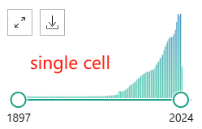
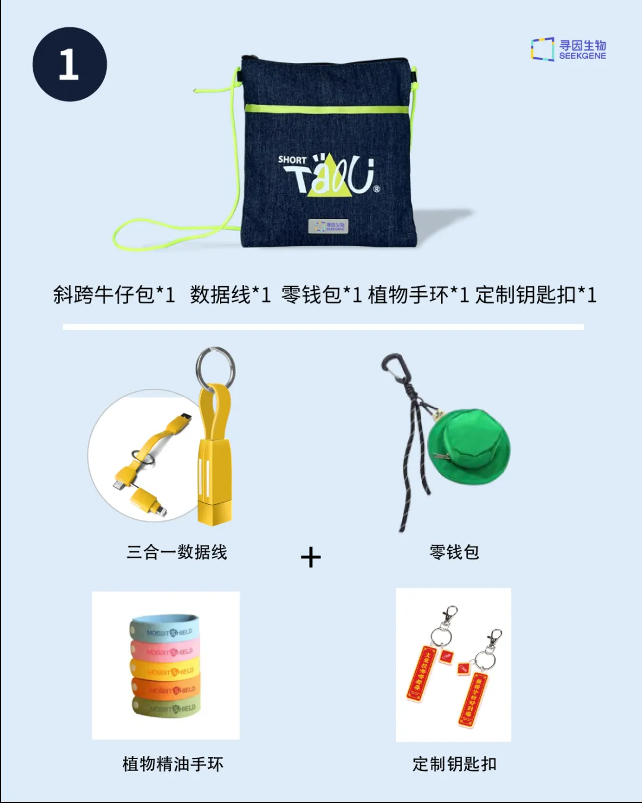
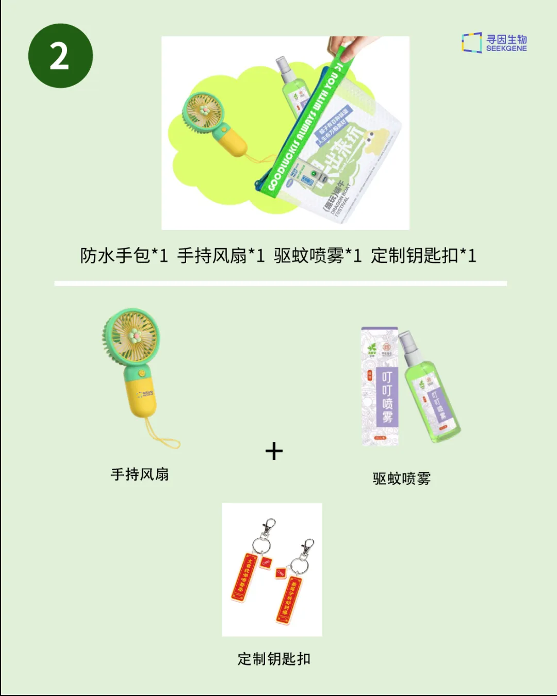

我做单细胞的这几年
原文：https://mp.weixin.qq.com/s?__biz=MzAwMzIzOTk5OQ==&mid=2247510771&idx=1&sn=ab84a4cbc1c713ab0a563d142b0566f0&chksm=9b3cd3a3ac4b5ab557853b586b3230eccd38b89f90a0468b482094a5dab5062bc52cfc85a467#rd 合集：单细胞云平台
从拿到第一份单细胞测序数据开始，恍然过了四年多；距汤神发表第一篇单细胞文章已经过去近十五年 了。这些年里，单细胞领域发生的变化已经太多太多。最直观的变化：19年底我做的单细胞转录组项目还得3w /样本，而现在价格已经腰斩 了一轮又一轮。现在入行的同学无疑是不幸 且幸运 的：不幸的是时过境迁，单细胞已经不再像多年前那样随便测两个样、分个群就能发好文章，层出不穷的单细胞文章倒逼大家卷 样本数、卷 分析方法、卷 可视化方式；幸运的是随着单细胞成本的下降、单细胞分析社区的日益成熟，单细胞入行的各方面门槛也随之下降。
在我刚开始拿到单细胞数据时，面对天书 一样的原始数据和deadline ，心里充满了焦虑 。那时的我每天疯狂地在互联网上检索 ，翻遍了GitHub和各类知识分享平台，花了两年 的时间，我才发表了第一篇单细胞测序的论文。相信有很多和我一样"白手起家"的同学，能够与我共情，体会到训练单细胞分析技能的不易。为了帮助到像"曾经的我 "那样遇到困难的同学们，我一手制作了二十万+播放量的单细胞教程，相信超过半数的粉丝是因为这个系列视频而与我们结缘。虽然我们一直在用心做好每一个教程，但是每个同学的需求不同、编程基础不同，并不是每一个同学都希望通过代码的形式 来处理数据，也不是每一个同学都能够拥有足够支持完成硕博生涯的生信环境。


从上图可以看出，无论是以"single cell"还是"scRNA"，PubMed中的相关文章每年都在以指数的形式上升。在"全民"单细胞的今天，仍有许多同学因为代码门槛 而对这个行业望而却步。为了让更多的人无痛地 加入单细胞/生信领域，我们做过很多的尝试。现如今，我们找到了志同道合的伙伴，共同开发并优化了SeekSoul Online单细胞分析云平台 ，以帮助大家以零基础、零代码的姿态从事单细胞相关数据分析与挖掘。在此，我们真挚地邀请您与我们一同体验、并优化SeekSoul Online(阅读原文可跳转)：
活动一：申请有奖-5月1日前注册的用户(限前80个 账号)，联系下方客服微信立即开通2个样本 分析权限，体验有效期半个月。
活动二：云平台内测体验官福利-体验云平台分析流程后提供3张分析结果图片+200字测评(问卷链接：https://www.wjx.cn/vm/QIX0xRI.aspx# ，图片反馈可以发在交流群 中哦)，赠送6个样本云平台分析权限，有效期3个月(价值5400￥)，限5月31号前开通，名额共二十人 。
活动三：所有提交云平台反馈问卷的同学，都可以在以下礼品中任选其一：


云平台使用教程可参考：单细胞云平台教程全收录
云平台访问链接：https://seeksoul.online/t_static/Biomamba/Biomamba.html
体验反馈问卷链接：https://www.wjx.cn/vm/QIX0xRI.aspx#
各位同学需要联系您的专属在线客服，获取demo数据后，进行操作学习。